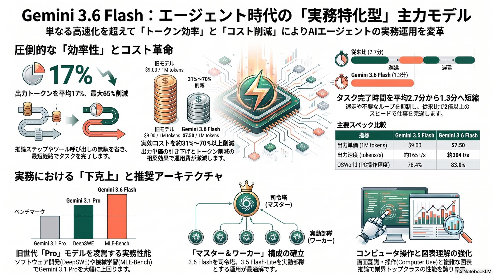

賢いAIは、もう「おしゃべり」をしない。
Gemini 3.6 Flashが示す『エージェント経済』の衝撃
2026年7月21日、Googleが一般提供を開始した最新モデル「Gemini 3.6 Flash」。「モデルが賢くなる＝より長く丁寧に話す」という従来の常識を覆し、沈黙のうちに最短経路で仕事を完遂する知能を提示した。出力トークンを平均17%削減しながら、旧フラッグシップのGemini 3.1 Proをベンチマークで圧倒する——その実力と、エージェントを「実験」から「インフラ」へ移行させる経済性を読み解く。
無駄な試行錯誤を減らして最短距離で完遂
DeepSWEタスクで顕著な効率化
単価値下げとトークン削減の相乗効果
従来モデルの2.7分からほぼ半減
DeepSWEで軽量モデルが上位モデルを逆転
最新ツール・ライブラリ前提で即戦力

AIの「知能」に対する誤解を解く
AIを実務に導入している現場では今、深刻な「迷走」が起きています。複雑な指示を与えるとAIが延々と無意味な試行を繰り返す「実行ループの迷走（Execution Loop Spiraling）」、そしてそれに伴って膨れ上がるトークンコスト。これらは、AIエージェントを「実験」から「実戦」へと移行させる際の大きな壁となっています。
従来の常識では「モデルが賢くなる＝より長く、丁寧に話す」ことだと考えられてきました。しかし、2026年7月21日にGoogleが一般提供（GA）を開始した最新モデル「Gemini 3.6 Flash」はこの常識を根底から覆します。
このモデルが提示したのは、「沈黙のうちに最短経路で仕事を完遂する知能」というコンセプト。饒舌に語るのではなく、最小限のステップで結果を出す——これこそが、Googleが「エージェント時代のワークホース（主力）」と位置づける本質的な進化である。
驚異の「トークン断捨離」— なぜ出力が減ることが進化なのか
Gemini 3.6 Flashの最大の特徴は、前世代の3.5 Flashと比較して出力トークンを平均17%削減した点にあります。特定のコーディングタスク（DeepSWE）においては、最大65%もの削減を達成しています。
出力トークン削減率：標準タスク vs コーディングタスク（DeepSWE）
前世代3.5 Flash比。バーが短いほど「無駄なく完遂」
単に文章を短くしたのではなく、「推論ステップの削減」「不要なツール呼び出しの抑制」「同じ箇所を繰り返し調査するループの抑制」という仕事の進め方そのものの洗練による結果。この「ミニマリストな知能」が、エージェント特有の実行ループの迷走を断ち切る鍵となる。
実務現場からの証言
- JetBrains：低reasoning設定でのコーディング性能が10〜20%改善したと評価。
- Harvey（法務・金融）：前世代比で平均12%速くタスクを完了したと報告。
実質コスト「3割減」の衝撃 — AI単価の裏に隠された真の経済性
ビジネスにおいて、AIの運用コストは「単価 × 消費トークン量」で決まります。3.6 Flashはこの両方にメスを入れました。
単価の値下げ出力単価 $9.00 → $7.50
1Mトークンあたりの出力単価を約16.7%引き下げ。
消費量の削減平均17%のトークン削減
単価引き下げに加え、そもそもの消費トークン量自体も削減。
相乗効果実効コスト最大71%減
標準タスクで約31%減。DeepSWEのような高削減ワークロードでは約71%減に達する。
タスク完了時間とタスク単価の変化
Artificial Analysis 計測値。前世代 → Gemini 3.6 Flash
| 指標 | 前世代 | Gemini 3.6 Flash | 変化 |
|---|---|---|---|
| 平均タスク完了時間 | 2.7分 | 1.3分 | ほぼ半減 |
| 平均タスク単価 | $0.59 | $0.50 | 約15%減 |
| 出力単価（1Mトークン） | $9.00 | $7.50 | 約16.7%減 |
この経済性は、AIを単なる「実験」から、24時間稼働し続ける「大量運用のインフラ」へと移行させるための決定的な分岐点となる。
「Flash」が「Pro」を追い越す下克上 — 量産型モデルの逆襲
Gemini 3.6 Flashは、軽量モデルでありながら旧世代のフラッグシップであるGemini 3.1 Proをベンチマークで圧倒しています。3.1 Proが旧来のアーキテクチャに基づくのに対し、3.6 Flashは磨き上げられた最新の3.5ベース・アーキテクチャを採用していることによる「世代交代」の証左です。
| 評価指標 | Gemini 3.6 Flash | Gemini 3.1 Pro（旧フラッグシップ） | 含意 |
|---|---|---|---|
| DeepSWE（ソフトウェア開発） | 49.0% | 12.0% | 長手数エージェント性能で4倍以上の差 |
| MLE-Bench（機械学習） | 63.9% | 42.6% | 機械学習エンジニアリング能力の逆転 |
| OSWorld-Verified（PC操作） | 83.0% | 76.2% | コンピュータ操作エージェントとしての優位 |
| 1M Context（長文読解） | 54.0% | 26.3% | 100万トークン領域での圧倒的理解力 |
実務の主役は、重厚長大なモデルから、速度・コスト・品質のバランスを極めた「磨き上げられた量産型」へと完全に交代したと言える。
肉体を得たAI — 「視覚」と「操作」の統合が変える実務の現場
3.6 Flashの進化はテキスト処理に留まりません。OSWorldでの高スコアが示す「Computer Use（コンピュータ操作）」能力と、CharXivが示す「複雑な図表の理解」能力の向上は、AIに「実務を完遂するための肉体」を与えました。
単にPDFを要約するのではなく、実際のデスクトップ画面を「見て」、複数のツールを「使い」、複雑な図表から情報を「読み解く」。Google DeepMindのデミス・ハサビス氏が掲げる「知能はこれらすべてを統合しなければならない」という思想が、このモデルには色濃く反映されている。
実装上の注意：Computer Useのサポート状況は提供チャネル（Vertex AI vs AI Studio）によって異なる。モデルの能力を最大限に引き出すには、インフラ側の実装検証が不可欠。
新時代の「王道構成」— 3.6 Flashを司令塔、Liteを実動部隊へ
Googleは、3.6 Flashを「マスターエージェント（司令塔）」、同時発表された3.5 Flash-Liteを「サブエージェント（ワーカー）」として使い分けるアーキテクチャを推奨しています。
推奨アーキテクチャ：司令塔と実動部隊の役割分担
3.6 Flashが計画立案、3.5 Flash-Liteが大量データ処理を担当
司令塔（3.6 Flash）が全体の計画立案・高度なマルチモーダル分析を担当し、実動部隊（3.5 Flash-Lite）が350 tokens/sの超高速性能を活かして大量データ処理を担う。
開発者が留意すべき2つの変更点
- サンプリングパラメータの刷新：temperature等が非推奨となり、新たに「thinking_level」が導入。AIが自ら思考の深さを制御し、より決定論的で安定したエージェント挙動を実現する。
- Fine-Tuning非対応：3.6 Flashは現時点でファインチューニングに非対応。チューニング済みワークロードを運用中の場合は、引き続き3.5 Flashを併用する戦略が求められる。
| モデル | TTFT（初回応答までの時間） | 向いている用途 |
|---|---|---|
| 3.5 Flash-Lite | 6.11秒 | 即時性を重視するUI |
| 3.6 Flash | 11.54秒 | 司令塔としての計画立案・分析 |
| 3.5 Flash（旧世代） | 20.22秒 | —（3.6 Flashへの移行を推奨） |
結末：知能を「量産」する準備はできているか
Gemini 3.6 Flashの登場は、AIを単に「使う」フェーズが終わり、企業の「インフラとして組み込む」フェーズが始まったことを象徴しています。知識カットオフが2026年3月まで更新されたこのモデルは、最新のライブラリやツールを前提とした現代のプロジェクトに即時投入可能です。
すでにGoogleは、完全に新しい基盤モデルである「Gemini 4」の事前学習を開始したことを明言していますが、次世代を待つ必要はありません。コストが下がり、成功率が劇的に上がった今、最後に問われるのは導入側の想像力です。